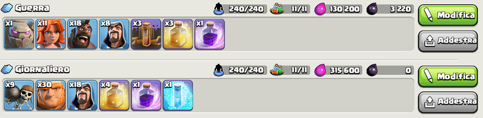

15/04/20
Una piccola curiosità che forse non sapete
Forse lo sapete già o forse no, in ogni caso io l'ho scoperto ieri! Quando andate sulla sezione "addestra velocemente" dove potete salvare fino a 6 eserciti diversi. Per tenere tutto ordinato si può dare un nome ad ogni esercito con scopi o tattiche diverse, così da trovare subito quello che ci serve, come nella foto qui sotto.

Spero che lo troviate utile o interessante. Alla prossima amici!